Because finding a seat shouldn't be work.
Snug is a high-fidelity iOS app and vendor dashboard ecosystem that lets students and remote workers find, browse, and claim seats at nearby cafés and libraries in under 60 seconds. Born out of personal campus frustration, an 8-month design process, and 13+ user testing sessions, Snug bridges the gap between unpredictable physical environments and the confidence to commit to a space before you ever leave the door.
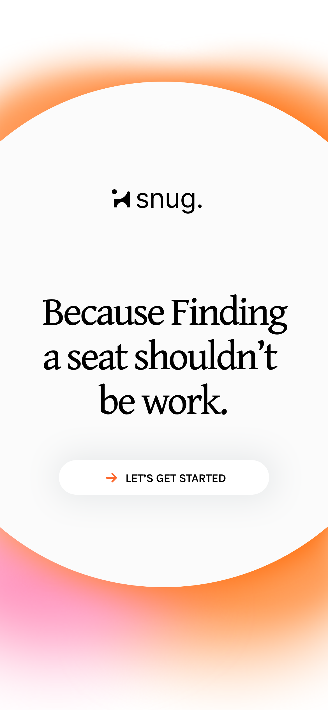
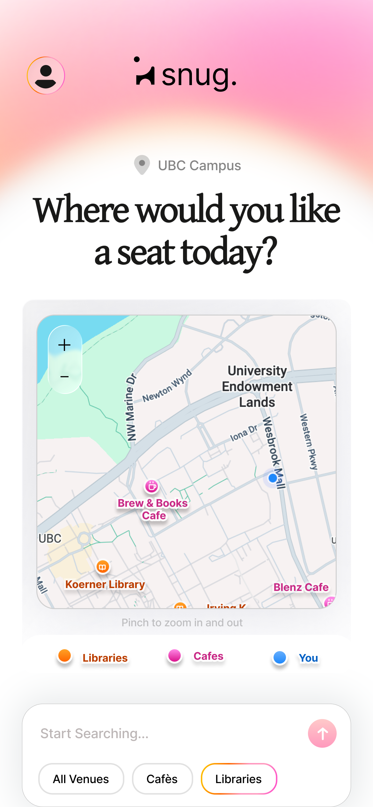
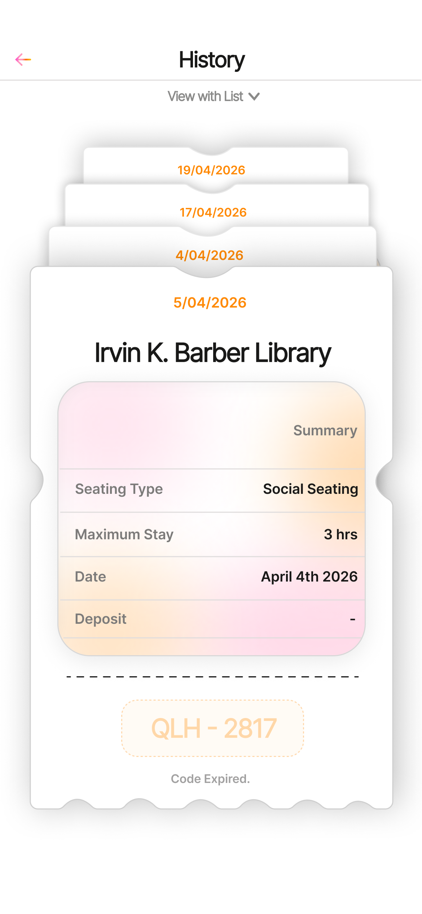
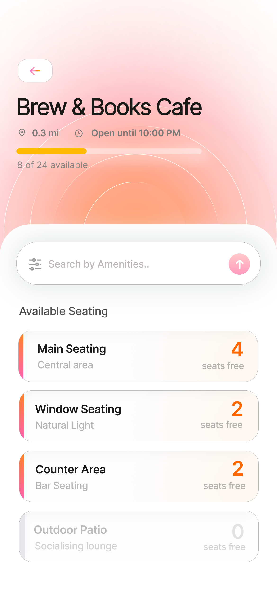
Breaking Navigational
Friction
The Current Reality
Shared spaces—cafés, libraries, and coworking spots—are unpredictable by nature. Availability shifts by the minute, meaning there is no way to know what you're walking into before you arrive. Students and remote workers spend 6 to 18 minutes per session searching for available seating, and a staggering 70% walk into a space, find it full, and leave without sitting down.
Moving the Window
The emotional language across user interviews was strikingly consistent: seat searching was described as "draining," "demotivating," and "stressful". To solve this, I shifted the problem earlier in the journey—focusing entirely on the critical decision window before arrival. The goal was to provide an option reliable enough to act on, yet simple enough not to create new friction.
The Initial Design Question
"How might we give students and remote workers visibility into seat availability—before they ever leave the door?"
Contextual Inquiries
& Real Constraints
Challenges
Talking to Real People
I conducted 10 interviews and 5 usability sessions around UBC. Seat searching emerged as a routine source of stress, described by users as draining and demotivating.
The Other Side of the Problem
I interviewed café managers at Kafka and Blue Chip. They revealed that guaranteed seating options create massive operational risks during peak class hours.
Initial Assumptions
Shifting the Journey Window
Instead of fixing frustration after it happens, we assumed we could move the problem earlier in the journey. The system had to be reliable enough for users to act on, yet simple enough to avoid creating new friction for busy café vendors.
Core Parameters
- Pre-Arrival Visibility: Shifting the decision window to before the user leaves home.
- Dual-User Design: Solving for both the student looking to work and the business owner's margin.
- No Static Forecasts: Avoiding baseline data that fails to adapt to rapid, real-time seat turnover.
Process Overview
- Brief
- Handover
- Lean UX canvas
- Business case
- Strategy
- Lo-fi solutions
- UX design
- Feasibility analysis
- Recommendations
- Decision making
- Figma Prototype
The Art of Reduction
Discovery
Sprint 1
I built an interactive prototype called Spotly to give users live visibility. We ran 5 usability sessions, assigning the exact same task: find a café, check seat availability, and claim a spot.
UX Outcomes
- Immediate Comprehension: All 5 participants understood the core concept instantly without guidance.
- The Commitment Gap: Users hesitated 4 to 7 seconds before pressing claim, exposing a deep lack of system trust.
- Subtle Failures: Relying purely on color variations meant users could not easily tell available seats from limited ones.
Key Insights
The Routine Friction is Widespread
- 70% of users walk into a space, see it full, and instantly walk back out.
- Users had already entirely warped their daily habits around avoiding peak classroom hours.
Hypotheses
Busy Lives & Distractions
Users try to check availability while walking or multi-tasking, meaning heavy layouts or floor plan maps add unnecessary cognitive steps.
Lack of Financial Literacy
Without a crystal clear explanation of deposit mechanics, users treat monetary commitments as financial penalties.
Procrastination Dynamics
Selecting exact arrival durations introduces sudden friction at the point of commitment, leading to immediate app abandonment.
Inadequate Seating Tools
Generic maps show geographic points but entirely fail to contextualize critical environmental properties like noise levels or charging access.
Emotional Commuting
The immediate stress of losing a seat details your workflow momentum before you start, yielding complete resignation.
UX Strategy
Leverage Behavioural Science
Integrate behavioral framing to address the confidence gap. By clearly showing ticket confirmations on a singular summary card, we establish mutual trust upfront.
Bite-Sized Workspace Wellness
Instead of demanding complex structural interactions, we break down seat scanning into simple, descriptive micro-steps so users can skip the visual chaos.
Iteration 01 : Spotly
I brought my vision to life with a lo-fi design iteration, offering a skeleton concept that would later help Snug to be contructed and viable.
The Baseline Concept
I incorporated real-time seating availability in a map form assuming it would help users truly see what seat they'd choose and where it would be in the place of their choice. At this point in my iteration there was no separate screen for confirmation of the user booking a seat.
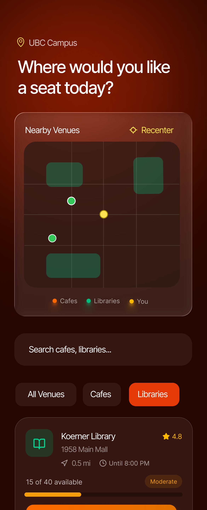
The Seat Guarantee
Aimed to make pre-arrival check-ins an absolute breeze. This model allowed users to review micro-occupancy charts for each café or library zone in just a few seconds. By distilling complex, shifting seat data into bite-sized visual statuses, it made picking a specific workspace layout highly engaging and predictable.
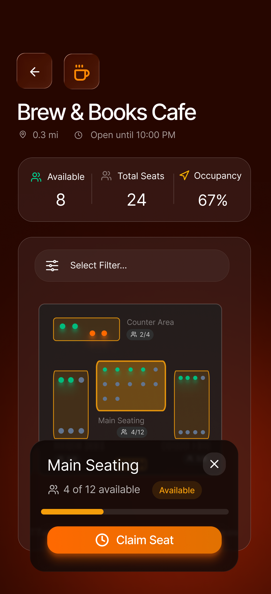
The Micro-Booking Flow
I reimagined the entire space-seeking routine as a dynamic, commitment-driven journey. By adding explicit hold limits, I encouraged students to lock down a zone seamlessly before leaving campus, eliminating the anxiety of walking into a completely packed venue.
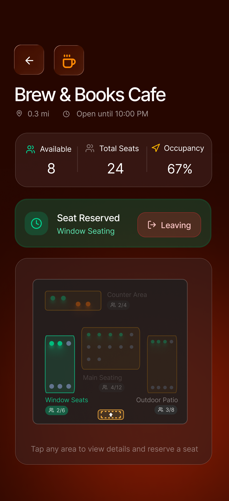
Identifying the Friction
After putting these initial concepts in front of users, critical usability roadblocks immediately emerged. While the baseline map provided speed, relying purely on color variations meant users couldn't easily distinguish between available and limited seating. Furthermore, the micro-booking flow exposed a deep lack of system trust—users hesitated for 4 to 7 seconds before committing to a spot. We realized that generic maps failed to provide the necessary environmental context, pushing us to rethink how we display noise levels, outlet access, and absolute availability before moving into high-fidelity production.
From Friction to Flow
The Snug Pivot
In this sprint, we set out to resolve the critical usability failures of the Spotly prototype. We realized that while speed was important, a baseline map with color-coded markers wasn't enough to build user trust. Snug was constructed to bridge this gap by transforming unpredictable floor plans into a baseline of certainty—providing deep environmental context, explicit booking contracts, and a seamless transition from search to arrival.
Problem to Solution Toolkit
I compiled a direct mapping of the UX roadblocks we identified in our usability sessions to the high-fidelity solutions we implemented in Snug. This framework served as our guiding resource for the final interface.
snug.
At a Glance
snug. is designed for today's unpredictable campus environments, where every minute spent searching for a seat is a minute lost from deep work. It cuts through the navigational noise, acting as a live environmental dashboard where users can spend just 30–60 seconds securing their workspace before leaving their dorm or classroom.
Our goal is to create an experience that requires minimal cognitive load from users, delivering only the most essential contextual data and guaranteed booking mechanics to empower confident commuting decisions.
Key Features
- Instant Visibility: See exactly which venues have seating before leaving your current location.
- Contextual Filtering: Sort spaces by critical needs like noise levels, outlet availability, and natural lighting.
- Guaranteed Holds: Secure a seat via a digital ticket, instantly updating the vendor's dashboard capacity.
- Flat Grace Periods: Eliminates complicated ETA math with standard 15-minute travel buffer windows.
- Transparent Deposits: Clear financial mechanics where hold deposits convert directly to café credit upon arrival.
Anatomy of snug.

The Contextual Map
I transformed the standard, stressful campus map into a live environmental dashboard. This acts as the user's home base, instantly scanning nearby spaces and filtering out the noise to show only what matters: where they can sit right now.
Functional & Visual Rationale
By stepping away from ambiguous color-coded dots, I prioritized absolute capacity metrics. The interface is visually lightweight to prevent cognitive overload, ensuring users can process availability while walking or multi-tasking.
Core Features
Live Seat Tracking: Real-time syncing with café vendor dashboards.
Environmental Filters: Instantly sort by noise thresholds, outlet access, and lighting.
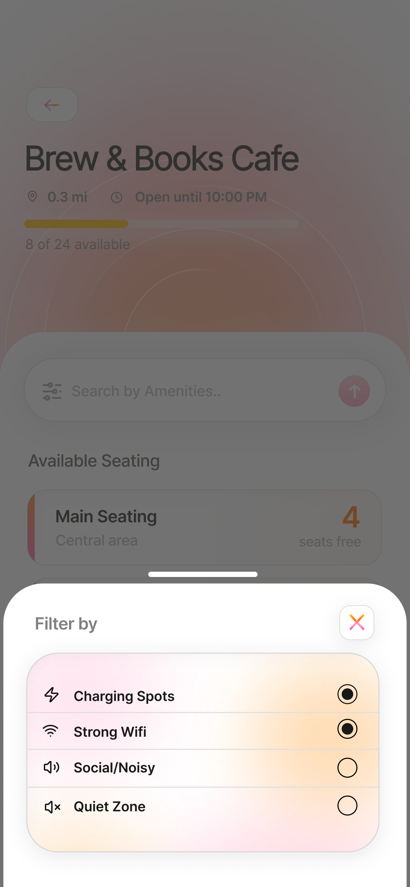
Venue Insights
Before committing to a commute, users need absolute confidence in their workspace. This screen breaks down the specific conditions of a chosen café or library zone in a matter of seconds.
Functional & Visual Rationale
I designed this as a bite-sized "workspace wellness" check. Instead of dense paragraphs or complex floor plans, data is presented in scannable, modular cards so users can verify amenities without scrolling endlessly.
Core Features
Micro-Occupancy Charts: Visual breakdowns of busy zones vs. quiet zones.
Amenity Breakdown: Clear iconography for Wi-Fi speed, outlets, and seating types.
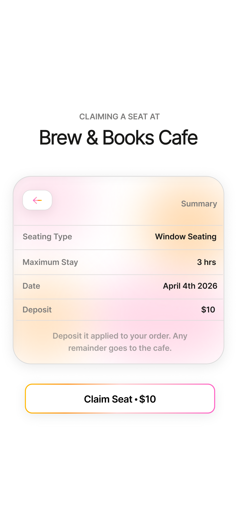
The Booking Flow
The critical moment of commitment. I completely reimagined the space-seeking routine to eliminate the hesitation previously seen in the Spotly iteration, replacing ETA math with standardized buffer windows.
Functional & Visual Rationale
To combat procrastination and financial anxiety, the layout uses clear, unambiguous typography to explain deposit mechanics. The design actively guides the user to the primary action button without visual distractions.
Core Features
Flat Buffer Windows: A standard grace period to arrive without mental math.
Transparent Deposits: Clear phrasing ensuring the hold fee applies to café purchases.
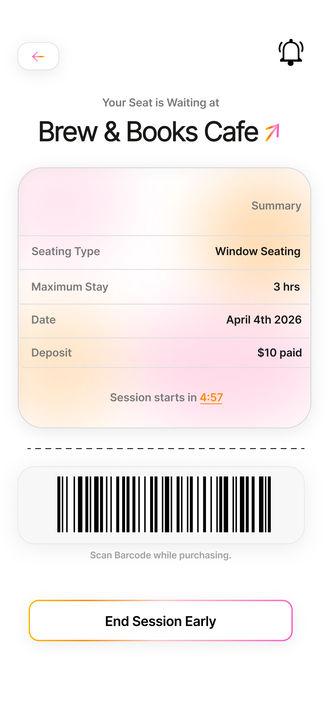
The Summary Card
The ultimate solution to the system trust gap. This active ticket functions as a transparent, digital handshake between the student and the vendor, ensuring peace of mind during the commute.
Functional & Visual Rationale
By visually framing the confirmation as a receipt or ticket, I leveraged behavioral familiarity. The high-contrast live timer ensures the user always knows exactly how much time they have to claim their spot.
Core Features
Digital Handshake: Instant confirmation establishing mutual trust.
Live Hold Timer: A dynamic countdown preventing emotional commuting stress.
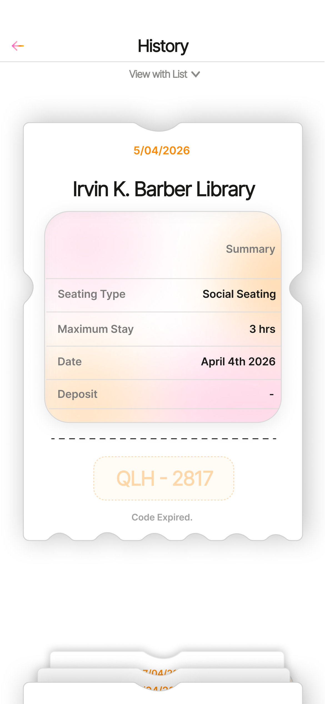
Ticket History
A clean, accessible log of all past and present seating reservations, doubling as a hub for users to quickly rebook their favorite campus spots with a single tap.
Functional & Visual Rationale
I designed this as an unobtrusive utility. The stacked card interface mirrors physical wallets, keeping active tickets distinctly separated from archived past data to maintain visual hierarchy and organization.
Core Features
Quick Access Rebooking: One-tap flows to secure previously visited locations.
Receipt Tracking: A log of all past deposits and cafe spend metrics.
The Other Half of the Ecosystem
Snug is a two-sided platform. For the live map to work perfectly for students, venue owners need a frictionless way to manage their capacity.
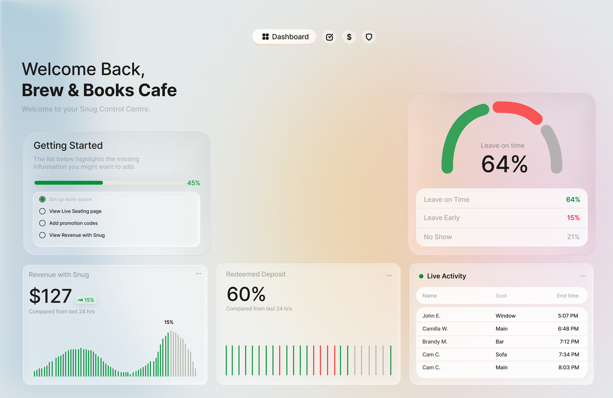
Closing the Loop
Without a reliable way for vendors to see upcoming arrivals and clear completed bookings, the student-facing map would instantly fall out of sync. I designed the Vendor Dashboard to be a low-effort control center that empowers café staff rather than burdening them.
Functional Rationale
Café staff operate in a high-stress, fast-paced environment. I ensured the dashboard relies on high-contrast visual cues and large, tappable zones so baristas can update table statuses in a single glance and tap, without disrupting their primary workflow.
Core Features
- Live Floorplan View: Real-time status of every seat (open, reserved, occupied).
- One-Tap Clearing: Instantly mark a table as available once a student leaves, syncing directly to the student app.
- Incoming Queue: A clear chronological list of students who have secured a hold and are currently en route.
New
Business
Potential
Unlocked
I identified three key business opportunities that set this ecosystem apart, ensuring mutual value for both the students seeking space and the venues hosting them.
Guaranteed Vendor Revenue
By implementing the hold deposit mechanic, cafes secure an upfront commitment. When the deposit converts to a coffee purchase upon arrival, it eliminates the problem of abandoned reservations and ensures that prime seating directly correlates to guaranteed sales.
Predictable Foot Traffic
The Vendor Dashboard's incoming queue provides cafes with real-time forecasting. Venue managers can anticipate rushes before they happen, allowing them to optimize barista staffing and inventory perfectly during peak campus study hours.
Data-Driven Campus Planning
Over time, Snug aggregates macro-level seating data. This presents a massive B2B opportunity to partner with university administrations, providing them with heatmaps of campus utilization to inform future infrastructure and library developments.
The Final Takeaway
Ultimately, transforming the flawed Spotly prototype into the robust Snug ecosystem taught me the true value of bridging the gap between digital interfaces and physical environments. While the baseline map concept provided a foundation, integrating real-time environmental context and explicit trust mechanics proved essential to moving this from a simple campus map to a viable, monetization-ready product.
Winning Moments
- • Ecosystem Design: Successfully balanced the needs of high-stress student commuters with the fast-paced, high-volume workflows of café vendors.
- • Behavioral Framing: Applied psychological principles to eliminate the 4-to-7 second user hesitation, translating a digital interaction into guaranteed physical peace of mind.
- • Scalable Architecture: Created a foundation that not only solves immediate user friction but opens up tangible B2B monetization pathways and data partnerships.
Lessons Learned
- • Testing Over Assumptions: Assuming users wanted "speed" over "context" in the first iteration led to high abandonment. I learned that real users need absolute certainty before committing to a commute.
- • Designing for the Real World: Digital products that interact with physical spaces must account for unpredictable human variables—like traffic, noise, and procrastination.
- • Embracing the Pivot: Recognizing the flaws in the initial MVP and being willing to completely rethink the interaction model was difficult, but ultimately crucial for the success of the project.